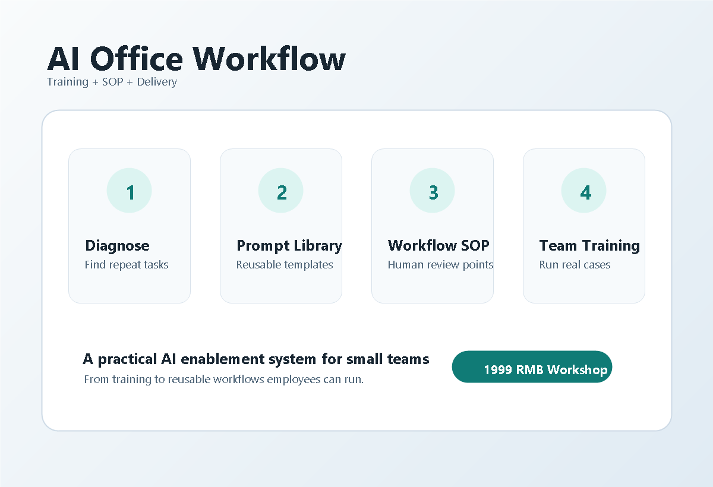

PPT与汇报
把主题拆成结构、页面标题、要点和讲解稿，减少从空白页开始的时间。
AI应用教学 + 办公工作流落地
面向个人、自由职业者和中小团队，提供AI办公实战培训、企业AI内训、岗位提示词库和轻量工作流落地。 不讲空泛概念，围绕真实任务交付可复用的方法、模板和SOP。

从每天重复、耗时、标准不统一的工作开始，先做出一个能复用的流程。
把主题拆成结构、页面标题、要点和讲解稿，减少从空白页开始的时间。
为小红书、朋友圈、公众号、抖音脚本建立稳定的选题和初稿流程。
沉淀客户跟进、异议处理、常见问题回复和售后安抚话术。
辅助生成JD、面试问题、会议纪要、周报月报和项目方案框架。
每次交付都从真实业务任务开始，明确AI能介入的位置、人工复核的位置， 以及员工如何复用模板。最后沉淀为提示词、检查清单和操作SOP。
找出最耗时、最重复、最适合先用AI改造的任务。
用客户自己的资料跑一遍PPT、文案、销售或客服案例。
输出岗位提示词、检查清单和员工可复制的操作SOP。
以下为演示案例，不涉及真实客户隐私，不承诺收益结果；用于说明交付方式和可落地成果。
将零散工作记录整理成周报结构，自动生成重点进展、风险问题和下周计划， 并加入人工复核清单，适合行政、运营、销售和项目管理岗位。
围绕报价、交付周期、效果预期和售后问题建立回复模板， 帮助商家更快响应咨询，同时避免夸大承诺和无效沟通。
设计2小时线上训练营：先演示，再让成员用自己的任务练习， 课后交付提示词模板、作业点评和7天轻量答疑。
先用低成本诊断验证场景，再决定是否做陪跑、内训或工作流落地。
适合个人或小商家，梳理1个AI办公场景，交付1套可直接使用的提示词模板。
适合需要快速上手的团队，包含场景诊断、实战演示、模板交付和一次修改建议。
适合企业AI办公内训或工作流落地，包含线上培训、岗位模板和7天轻量答疑。
所有交付都以能继续使用为标准，而不是只听一场课。
按岗位和任务整理，能直接复制使用。
从输入资料到输出检查，步骤清晰。
避免AI胡编、格式混乱和承诺过度。
发送你的岗位、业务场景和当前最耗时间的任务，我会先判断适不适合用AI提效。 本服务不承诺收益、涨粉或成交结果，重点是把AI落到具体工作。